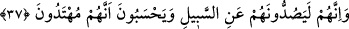
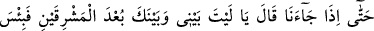
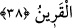

etmezse kor ateş ver» sözünün Kur’an’da yeri nerededir?” diye sorulunca Süfyan b.
Uyeyne bu darb-ı mesel “Kim Rahmân’ı zikretmekten gâfil olursa, yanından
ayrılmayan bir şeytanı ona musallat ederiz” âyetinden alınmıştır, dedi.
37. Şüphesiz bu şeytanlar onları doğru yoldan alıkoyarlar da onlar, kendilerinin
doğru yolda olduklarını sanırlar.
Kur’ân’a karşı kör olup Kur’an’dan yüz çevirenin herbirine musallat kılınan “bu
şeytanlar şüphesiz onları” sardırıldıkları arkadaşlarını “doğru yoldan alıkoyarlar da
onlar” Kur’an’a karşı kör olanlar, “onların” şeytanların “doğru yolda olduklarını
sanırlar.” Yoksa onlara tâbi olmazlardı. Yahut Kur’ân’a karşı kör olanlar, kendilerinin
doğru yolda olduklarını zannetmektedirler. Çünkü şeytanların doğru yolda olduklarına
inanmak, Kur’ân’a karşı kör olanların kendilerinin de doğru yolda olduklarına inanmış
olmalarını gerektirir.
“Yol”dan maksad, yol edinilmesi şânından olan açık yoldur ki bu yol Kur’ân’ın dâvet
ettiği yoldur.
38. O şeytan dostu kimse, en sonunda bize gelince arkadaşına: Keşke benimle
senin aranda doğu ile batı arası kadar uzaklık olsaydı, ne kötü arkadaşmışsın sen!
der.
Anlatıldığı gibi, Kur’ân-ı Kerîm’e karşı körlük edenler, şeytanları dost edinmeleri,
şeytanların onları doğru yoldan alıkoymaları hem kendilerini hem şeytanları doğru
yolda zannetmeleri devâm ederken nihâyet kıyâmette dost edindiği şeytanlarla beraber
“bize gelirler”. İşte o zaman, şeytana hitâben: “Keşke benimle senin aranda” dünyada
“doğu ile batı arası kadar uzaklık olsaydı.” Keşke sen benden ben de senden uzak
olsaydık. “Ne kötü arkadaşmışsın sen.” Sen dünyada ve bugün burada ne kötü
arkadaşsın “der.”
Ebû Saîd Hudrî şöyle demiştir: Kıyâmette kâfir dirilince şeytandan olan arkadaşıyla
eşleştirilir. Artık o şeytan ondan hiç ayrılmaz. Böylece cehenneme gider. Aynı şekilde
bir melek müminden ayrılmaz ve böylece cennete gider. Sonuçta şeytan hem dünyada
hem âhirette kâfirin dostudur. Melek de yine hem dünyada hem de âhirette müminin
dostudur. Bunlardan şeytan ne kötü dost, melek ise ne güzel dosttur.